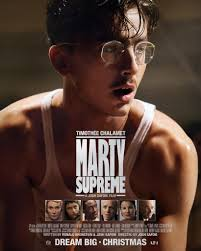

Nom : Marty Supreme
Pourquoi : Le film suit Marty Mauser, dit Marty Supreme, vendeur de chaussures et pongiste new-yorkais de 23 ans pétri de talent et d'ambition. Son personnage s'inspire de Marty Reisman, figure du tennis de table américain, qui a bel et bien participé aux mondiaux de tennis de table en 1952, l'année du récit.

À ajouter : images/groupe4.jpg